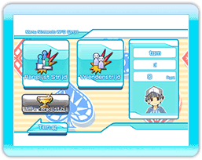

11 |
Menu Nintendo WFC Strijd |
 |

Als je in het "Nintendo WFC Menu" de optie "Nintendo WFC Strijd" kiest,, ga je naar het "Menu Nintendo WFC Strijd".
※In een "Ranglijst Strijd" krijg je punten voor de behaalde plaats.
1e plaats: 10 punten 2e plaats: 5 punten 3e plaats: 2 punten 4e plaats: -2 punten Met de behaalde punten kun je titels en voorwerpen aanschaffen. ※Als een speler midden in een strijd ermee ophoudt, dan worden voor straf 4 punten afgetrokken. Dus kijk uit!
Als je niet vier spelers kunt vinden, doet de computer mee. ※Als je "Vriendenstrijd" kiest, ga je naar het "Menu Vriendenstrijd".
|
 |
 |
 |